RAP 1.3 M2 - New and Noteworthy
Here are some of the more noteworthy things that are available in the milestone build M2 (October 2nd, 2009) which is now available for download.
This list shows all bugs that were fixed during this milestone.
Infrastructure for client-side unit tests
The new Javascript-Testrunner enables developers to write client-side
tests for their custom-widgets using a JUnit-like syntax. The
TestRunner also includes tools to simulate client-server communication
and user-interactions. A simple test-case might look like this:
If any assert fails, the TestRunner will inform the developer via its very simple UI and freeze Qooxdoo to ease debugging.
The project is located in the RAP CVS under
qx.Class.define( "com.example.widgets.tests.CustomWidgetTest", {
extend : qx.core.Object,
members : {
testText : function() {
var widget = new com.example.widgets.CustomWidget();
widget.setText( "Hello World!" );
assertEquals( "Hello World!", widget.getText() );
}
}
} );
If any assert fails, the TestRunner will inform the developer via its very simple UI and freeze Qooxdoo to ease debugging.
The project is located in the RAP CVS under
runtime.rwt.test/org.eclipse.rap.rwt.q07.jstest.
DateTime DROP_DOWN
The DateTime widget now supports the
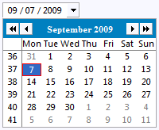
The appearance of the drop-down button can be changed with CSS in the same way like in Combo.
SWT.DROP_DOWN style.
DateTime dateTime = new DateTime( parent, SWT.DATE | SWT.DROP_DOWN );
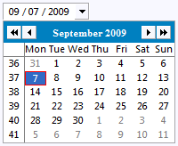
The appearance of the drop-down button can be changed with CSS in the same way like in Combo.
Compression Turned Off by Default
Until now, responses sent by RAP were compressed using gzip. When
running on Tomcat, this could lead to character garbage being delivered
to the browser (see
bug
259977).
Therefore we decided to turn off compression in RAP by default (bug 285669). Beside the issue in Tomcat, compression is a task that should rather be done by the servlet container to give administrators better control over the setup.
Compression can be turned on by specifying the VM argument
Therefore we decided to turn off compression in RAP by default (bug 285669). Beside the issue in Tomcat, compression is a task that should rather be done by the servlet container to give administrators better control over the setup.
Compression can be turned on by specifying the VM argument
org.eclipse.rwt.compression=true. This is the default
setting for newly created launch configurations.
New API added
Here is a list of API methods added in M2:
Text#getCaretPosition()CTabFolder#setSelectionBackground( Image )CTabItem#setShowClose( boolean )Display#getCursorLocation()Control#isReparentable()andControl#setParent()SWT.SHEETstyle flag forShellTree#select( TreeItem )andTree#deselect( TreeItem )Shell#setImages( Image[] )andShell#getImages()Shell#setMinimumSize( int, int ),Shell#setMinimumSize( Point )andShell#getMinimumSize()List#deselect( int ),List#deselect( int, int )andList#deselect( int[] )Control#update()andDisplay#update()ScrolledComposite#showControl( Control ),ScrolledComposite#setShowFocusedControl( boolean )andScrolledComposite#getShowFocusedControl()Table#showColumn( TableColumn )
Layout Override Mechanism
To customize an existing RAP design was not possible without touching
the providing bundle. Therefore we introduce a new mechanism to make it
much easier for adding or replacing own contributions to a design.
The mechanism makes it possible to replace existing LayoutSets. Therefore LayoutSet elements from the
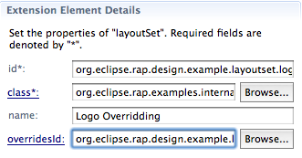
It's important to use the same identifiers for images, fonts, colors and positions within the
The mechanism makes it possible to replace existing LayoutSets. Therefore LayoutSet elements from the
org.eclipse.rap.ui.layouts extension point got a new
optional attribute called overridesId. To override a single LayoutSet
a developer has to create a new extension of
org.eclipse.rap.ui.layouts and give it the same id as the
Layout which contains the LayoutSet to override. After this he just
has to declare a new LayoutSet element and set the overridesId to the
original one. 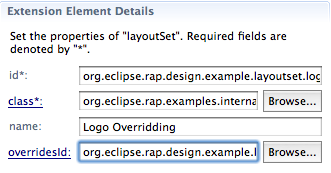
It's important to use the same identifiers for images, fonts, colors and positions within the
ILayoutSetInitializer.
Tooltips for TableViewer
The
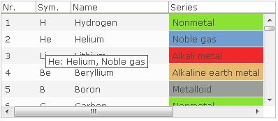
TableViewer can now display tooltips for its content.
It can be activated by calling
ColumnViewerToolTipSupport#enableFor().
Afterwards you need to override
CellLabelProvider#getToolTipText(Object) and have it
return the respective tooltip text. Other tooltip-related methods
(getToolTipBackgroundColor, etc.) are not supported.
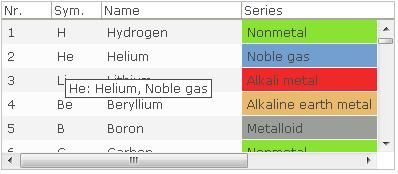
HelpSystem support
With the support for the Eclipse Help infrastructure, you're now able
to integrate the well-known help system into your RAP applications.
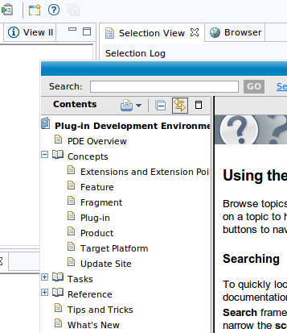
Currently RAP only provides the infrastructure to plug in a help system implementation. Depending on your needs you can go ahead and use a simple implementation as shown in our FAQ. In case you are already using the cheatsheets plugin with links to the help system, please be sure to include a help system implementation. Otherwise your users will not be able to open the associated help topics.
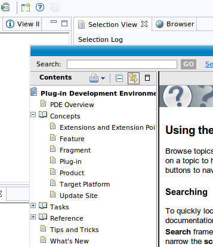
Currently RAP only provides the infrastructure to plug in a help system implementation. Depending on your needs you can go ahead and use a simple implementation as shown in our FAQ. In case you are already using the cheatsheets plugin with links to the help system, please be sure to include a help system implementation. Otherwise your users will not be able to open the associated help topics.
New Configuration Dialog
To provide a more consistent design we replaced the configuration
dialog of the Business design with a more lightweight implementation.
Additionally we added an effect called
Lightbox
which occurs when the dialog is open. To improve the usability of
the design we also have disabled the configuration button if a view
has no actions or viewmenu.
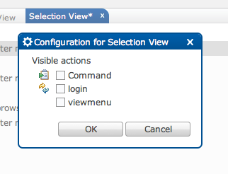
Fancy design
With RAP 1.2 we released a new look and
feel called business design. With this design we wanted to show
how RAP can look like in a serious sector. Now we introduce another
example called fancy design. This design shows that RAP is a
really modern technology and can look like one too.
To use this design a developer should follow the steps from the business design and replace the servlet name with "fancy".
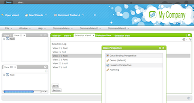
Please note that we changed a few IDs of some of the
To use this design a developer should follow the steps from the business design and replace the servlet name with "fancy".
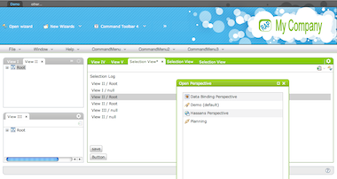
Please note that we changed a few IDs of some of the
LayoutSets. So, if you have replaced some LayoutSets please
update the overridesId attributes by removing the
word "business".
The above features are just the ones that are new since the last milestone build. Summaries for earlier builds: